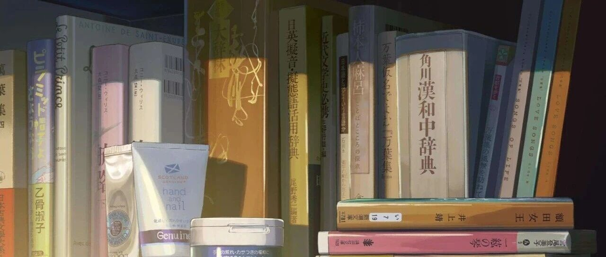

又解决了人生一件大事
点击关注 秋秋很开心
分享个人成长、提前退休生活日常

图：@秋秋
文：@秋秋
大家好，我是秋秋。
大老王经常说我读书很快，而且读完就能输出文章，咱也不是神人，全靠我早先研究了一套超厉害的阅读方法。
读完就忘、知识点零散、想用的时候用不上？
别自我怀疑——真不是你的问题，而是方法没到位。
你需要的，不是读得更多，而是读得更“聪明”。
今天秋秋就分享这套我一直在用的终极武器：一个高阶阅读秘籍 + 两款效率神器，助你聪明阅读，解决“人生一件大事”。
一、主题阅读
主题阅读，是阅读的最高层次，来自经典著作《如何阅读一本书》。
方法听起来很简单：主动设定阅读的目标，从不同书中寻找答案，最后整合成自己的知识体系。
它特别适合解决前面提到的三个问题（读完就忘、知识点零散、想用的时候用不上）：
✅ 对抗遗忘：因为知识是在解决问题中被理解的，印象自然深刻。
✅ 整合碎片：不同书的观点被串联起来，像神经元一样构建成知识网络；
✅ 激发输出：当你分析、比较不同观点，新想法自然就出来了，写作分享就不是难事了。
方法虽好，但自己找书、翻书、对比，实在太耗时，也太容易放弃了。
别急，下面这两款神器，能让主题阅读做起来非常非常轻松！
二、微信读书 + Obsidian
微信读书
这也是我使用最多的APP之一（无广）：
全文搜索很强：输入关键词，你看过的所有相关书籍相应的段落秒出，不用一本本翻，太省事了！
笔记流畅，导出友好：划线、笔记、评论一气呵成，所有笔记支持一键导出，摘抄的时间省去了。
便宜还无广告：大老王之前也参加过阅读挑战，只要365天不间断看书，就能“白嫖”一年会员权益，每天看书都会奖励免费时长。


2
Obsidian
我尝试过十几款笔记软件后的“终极选择”，之前也分享过，这次再详细说说：

它好用的功能是：
双向链接：从一个笔记能快速跳转另一个笔记，轻松关联。
比如，A书的“心流”和B书的“专注力”连起来，知识就活了。这正好是主题阅读需要的～
很多人不会写作，也可能是“肚子里没墨水”，有了Obsidian就不怕了，你想写旅游，一链接，祖国大好山河图片都出来了。
本地存储+全免费：很多笔记APP你会担心公司倒闭不能更新了，这个就不怕，数据都在电脑里，安全又安心。
可视化知识图谱：所有的笔记都能自动生成思维地图，让你的知识体系一目了然。

3
组合使用：1+1＞2
再来详细说说方法：
第一步（微信读书）：确定主题，搜索关键词筛选书籍，边读边做笔记。
第二步（导出迁移）：在Obsidian中，只需安装“Weread”插件，操作非常非常简单，就可以一键导入所有的划线、笔记、评论。

我在Obsidian中的读书笔记都做了这些了：

第三步（OB整合）：不是堆砌笔记，而是用双向链接，把不同书的观点连接起来，形成主题知识网络。
比如，我的「阅读方法」主题笔记，就链接了《如何阅读一本书》《海绵阅读法》等多本书的精华观点，它们又共同属于「学习成长」这个更大的主题。

三、实战演练：搭建「健康」主题
上一篇文章「如何确定人生主线」，大家很感兴趣，我就以人生主线中的「健康」为例，演示下完整流程：
定主题 & 提问题
核心主题：如何保持长期健康？我想到90岁也能有精力去旅行。
分解问题：健康四大支柱是什么？（饮食、运动、睡眠、情绪）具体怎么做？
2
搜书 & 阅读（主战场：微信读书）
读了《超越百岁》，建立整体的健康框架，确定了影响健康的四大支柱。
夏萌老师的《低碳水》，知道了饮食上要控制精制碳水的摄入。
《耐力》一书指出长时间的低心率有氧运动，可以增强心肺功能。
还有《纳瓦尔宝典》中提到的回信法能有效管理情绪、缓解焦虑。
当然也不局限于书，公众号文章、社交媒体、短视频等等都可以吸收进来。
比如九边的一条公众号文章，讲了白天小睡对精力恢复很有帮助，我尝试了确实有用。
3
整合 & 链接（主战场：Obsidian）
首先建立核心笔记「健康」，下设四大子板块：

然后开始进行知识缝合，把微信读书或者其它地方的笔记全部汇集起来：
在运动中链接《耐力》的观点；在饮食中链接《低碳水》的研究；在睡眠中链接九边小睡的建议；在情绪中链接纳瓦尔回信的方法。
最终形成一张以健康为中心、彼此连接的“知识体系”。

| 总结 |
主题阅读让你从接收者变成提问者和整合者。
微信读书 + Obsidian是实践主题阅读的最强利器。
山高万仞，只登一步。不要想得太复杂，从一个小主题开始试试！！比如“效率提升”、“入门理财”、“沟通技巧”，亲手搭建你的第一个知识小体系。
✨ 如果这篇文章对你有启发，一定转发给你关心的人。
“分享” 朋友，TA也想看